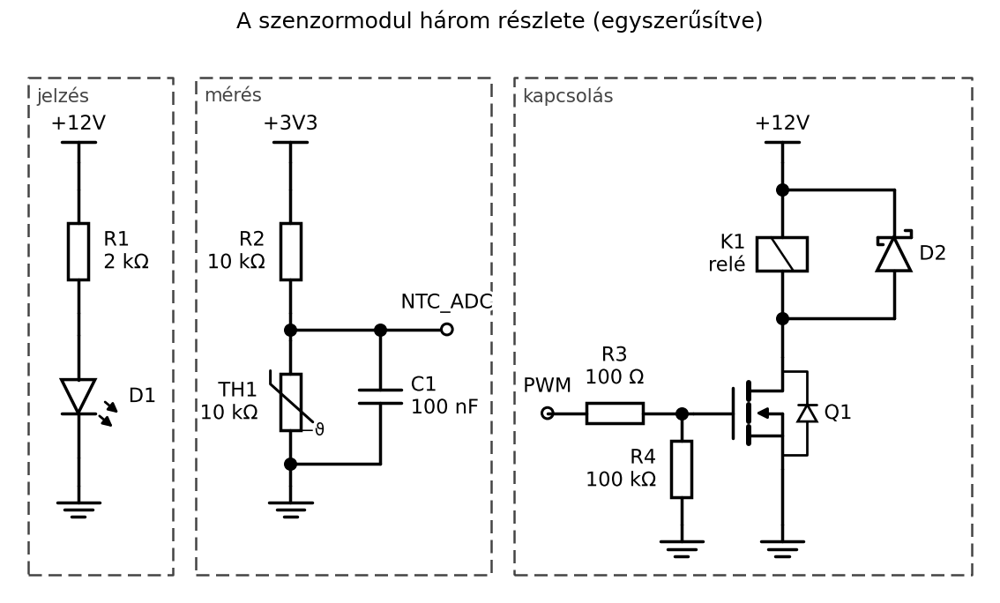
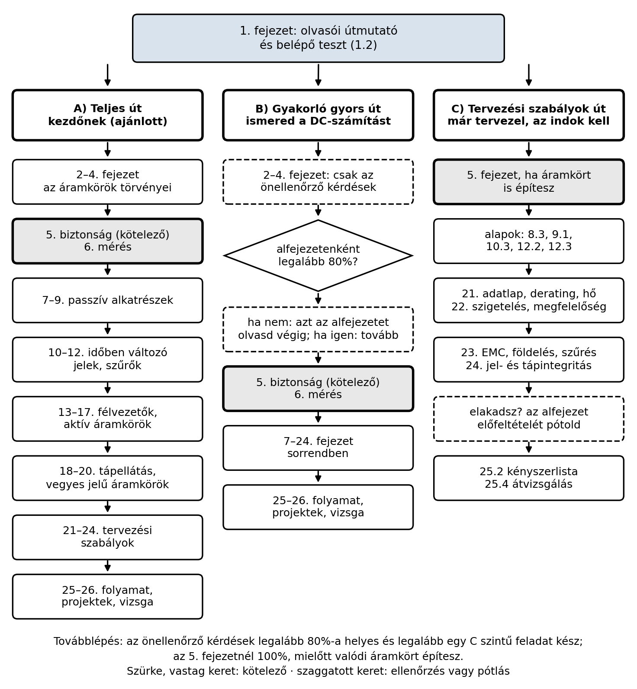
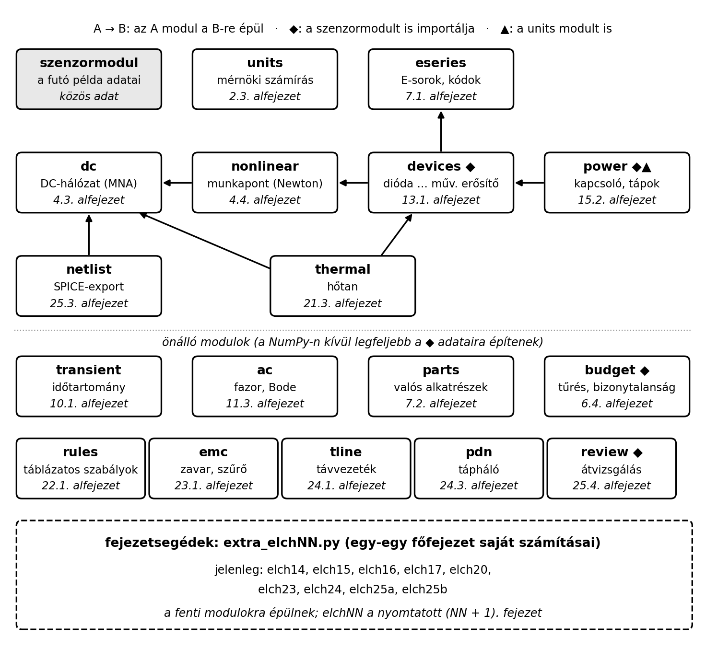
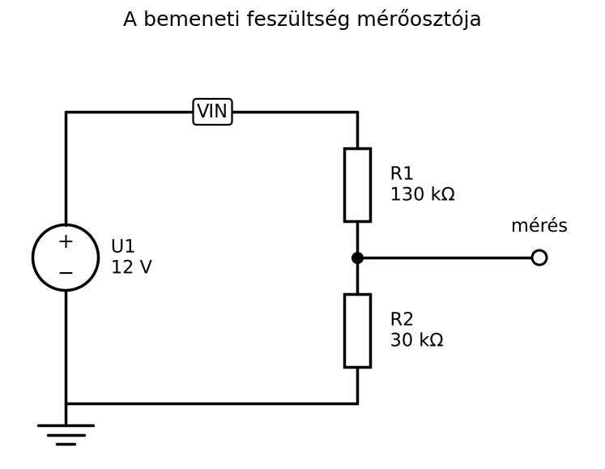
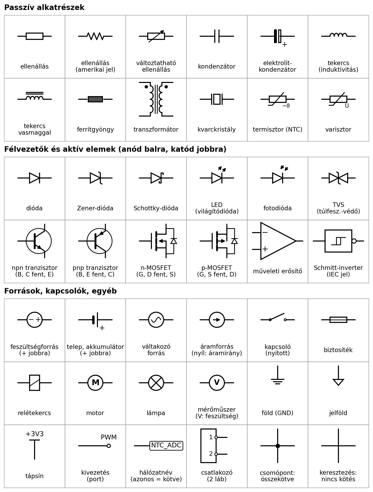
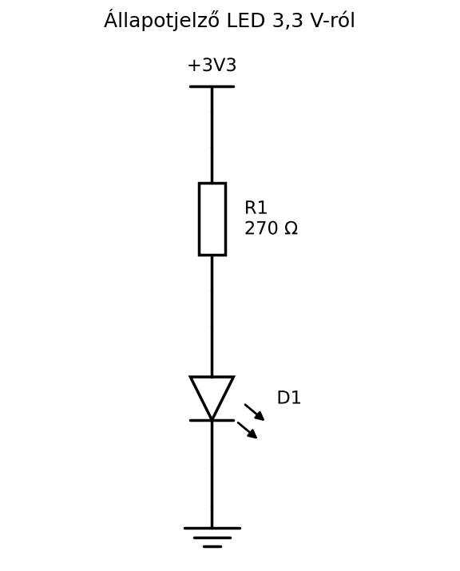

Üdvözlünk! Ez a könyv a nulláról indul: a töltéstől és az Ohm-törvénytől vezet el addig, hogy egy kis elektronikus rendszert magad tervezz meg kapcsolási rajzon, számítással és szimulációval igazolva. Elektronikai előismeret nem kell.
Mire leszel képes az útmutató végén?
Képzeld el, hogy egy kis dobozt kell terveznened. 12 V-os tápegységről működik, egy mikrovezérlő (programozható kis számítógép egyetlen tokban) van benne, méri a hőmérsékletet, és egy relét (elektromágnessel működtetett kapcsolót) kapcsolgat. Ezt a dobozt szenzormodulnak hívjuk, és a könyv végig ez a futó példája. Íme három részlete egy kapcsolási rajzon (angolul schematic), azaz rajzjelekkel és az összekötésekkel megadott áramkörön:

Most még nem kell értened a rajzot. Nézd inkább, milyen kérdéseket vet fel:
| Kérdés a modulról | Ízelítő a válaszból | Hol tanulod meg |
|---|---|---|
| Miért 2 kΩ a LED előtti ellenállás? | A LED-en kb. 2 V marad, a többi 10 V-ot az ellenállás veszi fel, és 5 mA folyik. | Ellenállás és az Ohm-törvény |
| Hogyan lesz a hőmérsékletből feszültség? | Az NTC (hőre csökkenő ellenállás) 25 °C-on 10 kΩ, a pont feszültsége 1,65 V; 60 °C-on kb. 0,76 V. | Érzékelők illesztése és a jelút hibaköltségvetése |
| Miért kell a relé mellé dióda? | A tekercs árama nem tud hirtelen megszűnni; kikapcsoláskor a dióda ad neki utat. | Biztonságos működési tartomány, lavina és induktív terhelés |
| Miért kell R4, ha a program úgyis vezérli Q1-et? | Induláskor a vezérlőláb lebeghet; R4 addig kikapcsolva tartja Q1-et. | MOSFET kapcsolóként: low-side és high-side |
A MOSFET (a rajzon Q1) elektromosan vezérelt kapcsoló, a LED világítódióda. A modul adatai rögzítettek, minden fejezet ugyanazokkal a számokkal dolgozik.
Négy kérdés köré épül minden:
Minden jelenséget három nyelven tanítunk: szemlélettel (ábra, animáció, kísérlet), képlettel (levezetéssel és érvényességi feltételekkel) és kóddal (Python-számítás, szimuláció). Ha az egyik nem „ül”, próbáld a másikat.
A végére (1) érted, mi történik egy kapcsolásban; (2) adatlapból (a gyártó műszaki leírásából) tartalékkal választasz alkatrészt; (3) követelménytől az átvizsgált kapcsolási rajzig megtervezel egy kis rendszert; (4) indokolni tudod a tervezési szabályokat.
A könyv 8 részből, 26 fejezetből és 86 alfejezetből áll, nagyjából 197 ezer szó. Egy alfejezet egy tanulási adag, ennyit érdemes egy-két ülésben feldolgozni.
| Rész | Fejezetek | Erre a kérdésre válaszol |
|---|---|---|
| I. Indulás és az áramkörök törvényei | 1–4. | Hogyan számolunk ki egy áramkört? |
| II. Biztonság és mérés | 5–6. | Mi veszélyes, és hogyan mérünk? |
| III. Passzív alkatrészek mélyen | 7–9. | Miben más a valódi ellenállás, kondenzátor (töltést és energiát tároló elem) és tekercs, mint az ideális? |
| IV. Időtartomány és váltakozó áram | 10–12. | Mi történik időben változó jelekkel, hogyan szűrünk? |
| V. Félvezetők és aktív áramkörök | 13–17. | Hogyan kapcsol és erősít a dióda, a tranzisztor, a műveleti erősítő? |
| VI. Tápellátás és vegyes jelű áramkörök | 18–20. | Honnan jön a stabil táp, és hogyan lesz a fizikai mennyiségből szám? |
| VII. Tervezési szabályok és szabványok | 21–24. | Mitől lesz megbízható, zavarmentes és biztonságos? |
| VIII. A tervezési folyamat és záróprojektek | 25–26. | Hogyan áll össze mindez egy tervvé? |
A térképen a sorok a fejezetek, a nyilak pedig néhány fontos gondolatmenetet követnek. Teli kör jelzi, hol vezetjük be a gondolatot, üres kör, hol használjuk újra, négyzet, hogy melyik záróprojekt (a könyv végi teljes tervezési feladat) épít rá.
A térkép üzenete: a korai gondolatok nem „levizsgázott anyagok”, hanem szerszámok, amelyekkel később dolgozunk. A visszatérő út fogalma például a 2. fejezetben jelenik meg, és a 23–26. fejezetben a zajmentes tervezés kulcsa lesz.
A fontos gondolatoknak nevet adunk, és visszautalunk rájuk, például: „minden áramnak van visszatérő útja”, „garantált értékre tervezz, ne tipikusra”, „abszolút határérték nem üzemi tartomány” (amit az alkatrész épp még túlél, azon nem szabad üzemeltetni).
Az elektrotechnika a villamosság műszaki alkalmazásának egésze, benne az energia előállítása, szállítása és átalakítása: motorok, transzformátorok, hálózatok. Az elektronika az áramot főleg félvezető alkatrészekkel vezérli, gyakran jelfeldolgozásra, azaz információ átalakítására. A határ nem éles: a szenzormodul hőmérséklet-mérése jelfeldolgozás, a relé meghajtása és a modul tápegysége energiaátvitel. A könyv a törpefeszültségű (kis, megfelelő feltételek mellett érintésre biztonságosnak tekintett feszültségű) elektronikára összpontosít, mindkét oldalról, amennyi egy ilyen modulhoz kell. A pontos határokról szóló alfejezet: Az áram élettani hatásai és a törpefeszültség.
A NYÁK-ra vonatkozó szabályokat (távolság, vezetőszélesség, alkatrész-elhelyezés) viszont elvként és indoklással tanuljuk, majd a Kapcsolási rajz konvenciói és a NYÁK-tervezőnek átadott kényszerek alfejezetben a rajzon rögzítendő követelménnyé, kényszerlistává alakítjuk. A könyv ott ér véget, ahol a NYÁK-tervező munkája kezdődik.
Folytatás a gyűjtemény könyveiben: a hálózati oldalhoz a Villanyszerelő – villamos berendezés- és készülékszerelő szakirány; a mikrovezérlős oldalhoz az IoT-rendszerek és az ARM assembly; a matematikához a Lineáris algebra kezdőknek és a Kalkulus és analízis a gyakorlatban; a visszacsatoláshoz a Szabályozáselmélet a gyakorlatban, a mintavételezéshez a Digitális jelfeldolgozás.
Feltételezzük a középiskolai algebrát (egyenletrendezés, törtek, hatványok), az arányosságot, az egyenes egyenletét, a szög és a szinusz fogalmát, az alapfokú fizikát (munka, energia, teljesítmény) és az alapszintű Python-olvasást. A többi matematikát (mátrixos egyenletrendszer, exponenciális függvény, komplex számok, decibel) ott tanítjuk, ahol először kell, és csak annyit, amennyi kell. Deriválást és integrálást nem feltételezünk: a „meredekség” és a „görbe alatti terület” szemléletét használjuk. A Tanulási útvonalak és belépő teszt megmutatja, hol tartasz.
Minden alfejezet ugyanabban a sorrendben halad (az útmutató és a záróprojektek lazábbak):
| Szakasz | Mire való | Tanulási tipp |
|---|---|---|
| Motiváció | konkrét helyzet, amely miatt az új fogalom kell | Fogalmazd meg magadnak a kérdést. |
| Szemlélet | ábra, rajz, animáció, hasonlat és a korlátai | Előbb jósolj, aztán olvass tovább. |
| Formalizmus | definíciók, képletek, feltételek, mértékegység-ellenőrzés | Mondd ki szavakkal a képletet. |
| Kézi számpélda | valós alkatrészértékek, lépésenként | Számold végig magad. |
| Kód | ugyanaz Pythonban, a futtatott kimenettel | Futtasd le és módosítsd. |
| Próbáld ki | 2–4 kísérlet az interaktív ábrával | Előbb tippelj, utána állíts. |
| Tipikus hibák | tünet, ok, javítás | Ezek spórolják meg a leégett alkatrészt. |
| Önellenőrzés | rövid kérdések | Válaszolj fejben, mielőtt ellenőrzöl. |
| Feladatok | A (begyakorló), B (alkalmazó), C (tervező, programozó) | Legalább egy C feladatot oldj meg. |
| Rövid összefoglaló | a lényeg és a továbbvitt eredmények | Ismétléshez először ezt olvasd. |
| Megoldások | teljes levezetések | Csak saját próbálkozás után nézd. |
A PDF- és az EPUB-kiadásban az animációk helyén képkocka-sor áll; az interaktív lapok segítenek, de a megértéshez nem feltétel.
A feszültség jele
,
az áramé
;
a kisbetű
(,
)
pillanatnyi, időben változó értéket jelöl. A szövegben
tizedesvessző áll (4,7 kΩ), a programkódban
tizedespont (4.7). Az új fogalmat félkövérrel emeljük
ki, az angol szakszót első előforduláskor zárójelben adjuk meg. A
függelékben a Fogalomtár, a Képlet- és
jelölésgyűjtemény, a Kompetenciatérkép és a
Bibliográfia segít (a forrásfájlokkal dolgozóknak a
teljes konvenciókészlet a context.md-ben van).
Két jelzés a számok megbízhatóságáról:
Továbbvitt eredmény. Minden későbbi alfejezet ezt a felépítést és jelölésrendet követi, és a „kapcsolási rajzig, NYÁK-rajzolás nélkül” határt tartja; a kényszerek átadásához a Kapcsolási rajz konvenciói és a NYÁK-tervezőnek átadott kényszerek, az átadás lezárásához a Tervezési átvizsgálás és átadás a NYÁK-tervezésnek alfejezet vezet.
A fenti térkép interaktív változatában (HTML-kiadás) kattints egy fejezetre.
A könyv a nulláról a kapcsolási rajz szintű tervezésig visz, a 12 V-os szenzormodul köré építve. Vezérkérdései: mit csinál az áram, mit lát egy alkatrész, miért működik vagy ég le egy kapcsolás, milyen szabályok szerint tervezünk. A nyolc rész a törvényektől a biztonságon, a passzív alkatrészeken, az időben változó jeleken, a félvezetőkön és a tápellátáson át a tervezési szabályokig és három záróprojektig halad. NYÁK-rajzolást, gyártást, hálózati munkát és chiptervezést nem tanít. Az alfejezetek állandó felépítésűek, a jelölések egységesek, a mintaadat és az „ellenőrizendő” jelzés a számok megbízhatóságát mutatja.
Mielőtt belevágsz, nézzük meg, honnan indulsz, és merre érdemes menned. Ez nem vizsga: senki nem látja az eredményt, és minden hibázott kérdés mellett ott van, hol pótolhatod.
Mire leszel képes az alfejezet végén?
Három olvasó nyitja ki ugyanezt a könyvet. Anna programozó, a mikrovezérlős paneljei „néha” működnek, és érteni akarja, miért. Bence mérnökhallgató: az Ohm- és Kirchhoff-törvényt ismeri, tranzisztort még nem méretezett. Csaba évek óta rajzol kapcsolásokat, de a „tegyél 100 nF-ot minden tápláb mellé” típusú szabályok indokát szeretné látni. Más-más utat érdemes bejárniuk.
Feltételezett ismeretek (a belépő teszt ezeket méri):
A könyvben külön tanítjuk (ezeket nem kell tudnod):
| Új eszköz | Mire kell | Hol tanítjuk |
|---|---|---|
| lineáris egyenletrendszer mátrixos alakja | nagy hálózatok gépi megoldása | A csomóponti potenciálok módszere és az MNA-megoldó |
| exponenciális függvény, időállandó | töltés és kisütés időben | RC és RL töltés–kisütés, időállandó |
| komplex számok | szinuszos jelek egyszerű számolása | Komplex számok, fazor és impedancia |
| logaritmikus skála, decibel | szűrők, zaj, nagy arányok | Decibel, átviteli függvény és Bode-diagram |
Deriválást és integrálást formálisan nem várunk el. Ahol kellene, két képet használunk: a meredekséget (milyen gyorsan változik valami) és a görbe alatti területet (mennyi gyűlt össze).
Oldd meg papíron, segédeszköz nélkül (számológépet használhatsz). A HTML-kiadásban az interaktív változat kérdésenként azonnal visszajelez, és megadja a pótló alfejezetet; a PDF-ben a megoldókulcs a fejezet végén van.
# részlet
r = [1000, 2200, 4700]
print(sum(x for x in r if x > 1500))Ezek a határok javaslatok, nem mért küszöbök:
Fontos, hogy mit hibáztál el. Ha csak a hatványok és az előtagok (2–4. kérdés) mennek nehezen, azt a Teljesítmény, energia, hatásfok és mértékegységek alfejezet rendbe teszi. Ha a 15. kérdés akadt el, egy rövid Python-bevezetőt nézz át; A labor és az elkit kódcsomag azt mutatja meg, hogyan használjuk a nyelvet.

A) Teljes út (ajánlott kezdőnek, Anna útja). Az 1–26. fejezet sorrendben. Minden alfejezet csak korábbiakra épít, ezért nem kell előreugranod. A 6. fejezet után érdemes visszanézni az opcionális laborjavaslatot (A labor és az elkit kódcsomag).
B) Gyakorló gyors út (Bence útja: „már tudom az alapokat”). A 2–4. fejezetben csak az önellenőrző kérdéseket oldd meg; ahol egy alfejezetben 80% alatt maradsz, azt olvasd végig. Utána az 5. fejezet (biztonság, kötelező) és a 6. (mérés), majd a 7–26. fejezet sorrendben. Ne hagyd ki a Továbbvitt eredmény kezdetű bekezdéseket sem: a későbbi fejezetek név szerint hivatkoznak rájuk.
C) Tervezési szabályok út (Csaba útja). Azoknak, akik már magabiztosan számolnak hálózatot és ismerik a félvezetős alapkapcsolásokat. Először öt alapozó alfejezet:
majd a 21–24. fejezet (adatlap, hő, szigetelés, EMC, jel- és tápintegritás), végül a Kapcsolási rajz konvenciói és a NYÁK-tervezőnek átadott kényszerek és a Tervezési átvizsgálás és átadás a NYÁK-tervezésnek. Őszintén: a VII. rész a korábbi anyag nagy részére épít. Ha egy lépésnél elakadsz, keresd meg, melyik alfejezetre hivatkozik, és pótold. Ha törpefeszültségű áramkört is építesz, az 5. fejezet itt is kötelező.
Aki főleg mikrovezérlős modulokat illeszt, a függelék Kompetenciatérképében egy negyedik, mikrovezérlős változatot is talál.
Gondolkodj előre! Bence a belépő tesztben csak a logaritmust (11. kérdés) hibázta el. Melyik út illik hozzá, és mikor pótolja a hiányt?
A B út. A logaritmus a decibelnél, a 12. fejezet elején kerül elő, és a könyv ott röviden fel is eleveníti; addig ráér, nem kell most megállnia miatta.
Egy alfejezetre, kézi számolással, kóddal és feladatokkal, becslésünk szerint 2–4 óra kell (nem mért adat, a tiéd eltérhet). Heti 4–5 alfejezettel:
| Útvonal | Alfejezet (kb.) | Hét |
|---|---|---|
| A) teljes | 86 | 17–22 |
| B) gyors (a 2–4. fejezet átugorva) | 76 | 15–19 |
| C) tervezési szabályok | 20 | 4–5 |
Továbblépési szabály. Egy fejezetet akkor zárj le, ha az önellenőrző kérdések legalább 80%-át helyesen megválaszoltad, és elkészült legalább egy C szintű (gondolkodtató, tervező vagy programozós) feladat. A programozós feladatoknál a kódcsomag tesztjei maradjanak hibátlanok. A biztonsági fejezetnél 100% a követelmény, mielőtt valódi áramkört építesz.
Továbbvitt eredmény. A belépő teszt témái és a pótlás helyei, alfejezet szerint: mátrixos egyenletrendszer – A csomóponti potenciálok módszere és az MNA-megoldó; exponenciális függvény – RC és RL töltés–kisütés, időállandó; komplex számok – Komplex számok, fazor és impedancia; decibel – Decibel, átviteli függvény és Bode-diagram. A három útvonal a Tervezési átvizsgálás és átadás a NYÁK-tervezésnek és a Vegyes vizsgafeladatsor felé vezet; a végső önértékelés ott történik.
Az interaktív teszten (HTML-kiadás):
| Tünet | Ok | Javítás |
|---|---|---|
| „Értettem, amikor olvastam”, de a feladat nem megy. | A felismerés még nem tudás. | Előbb írd le a saját megoldásodat, még ha rossz is, aztán hasonlítsd össze. |
| Egy későbbi fejezet érthetetlen. | Kimaradt egy előfeltétel, jellemzően a gyors úton. | Lépj vissza arra az alfejezetre, amelyre a szöveg hivatkozik. |
| Ezerszeres hiba a végeredményben. | Elveszett egy előtag (milli, mikro, kilo). | Számolás előtt írd át az adatokat alapegységre és tíz hatványára. |
| Heti terv, amely két hét után összeomlik. | Túl sok alfejezet egyszerre. | Kezdd heti kettővel, és növeld, ha tartható. |
A könyv középiskolai matematikát, alapfizikát és alapszintű Python-olvasást feltételez; a mátrixos egyenletrendszert, az exponenciális függvényt, a komplex számokat és a decibelt helyben tanítja. A belépő teszt tizenöt kérdése megmutatja a hiányokat, és megadja a pótlás helyét. Három útvonal van: teljes, gyakorló gyors út (a 2–4. fejezet önellenőrzésével) és tervezési szabályok út (alapozó alfejezetek, 21–24. fejezet, kényszerlista és átvizsgálás). Egy fejezet 80%-os önellenőrzéssel és egy C feladattal zárható, a biztonsági fejezet 100%-kal.
Zárójelben annak az alfejezetnek a nyomtatott száma, ahol pótolhatod vagy először használjuk.
Most berendezzük a „műhelyt”. A könyv minden számítása és szimulációja elfut a saját gépeden, alkatrész nélkül is. Ha kedved van valódi áramkört is építeni, ehhez kis asztali labort javaslunk, de ez nem kötelező.
Mire leszel képes az alfejezet végén?
elkit) tesztjeit és egy példát.elkit egy-egy modulja, és melyik
fejezet használja először.A könyv három nyelven tanít: szemlélettel, képlettel és kóddal (A könyv célja, felépítése és használata). A
kód azért fontos, mert kipróbálható: ha átírsz egy ellenállást, azonnal
látod, mi változik, és nem ég le semmi. Az elkit a könyvhöz
írt kis Python-csomag. Szándékosan olvasható: belenézhetsz, hogyan
számol, nem „fekete doboz”.
Szükséged van Python 3.11 vagy újabb verzióra. A
virtuális környezet (venv) egy külön mappa, amelybe a
projekt csomagjai települnek, így nem keverednek a gép többi
Python-programjával. A könyv mappájában
(advanced-books/adv-electronics-basics) add ki:
python3 -m venv venv
source venv/bin/activate # Windows alatt: venv\Scripts\activate
python -m pip install -r requirements.txt
python code/tests/run_tests.pyA requirements.txt három csomagot kér:
NumPy (tömbökkel végzett számítás),
matplotlib (ábrák) és SciPy (néhány
haladó numerikus eljárás; a csomag enélkül is működik). A telepítéshez
internetkapcsolat kell, utána a könyv kódja offline fut.
Az utolsó parancs a teszteket futtatja: apró
programokat, amelyek ismert eredményekkel vetik össze az
elkit függvényeit. Pontokat látsz, a végén a lefutott
tesztek számát és az OK szót. Ha FAILED vagy
hibaüzenet jelenik meg, ne haladj tovább: ellenőrizd, hogy a környezet
aktív-e, és a könyv mappájából futtatsz-e. A rajzoló tesztje közben
kiírhat egy „figyelmeztetés” kezdetű sort; ez önmagában nem hiba.
Egyetlen modul tesztjét a code mappából futtathatod:
cd code
python -m unittest discover -s tests -p "test_units.py"
cd ..További hasznos parancsok a könyv mappájából: a
python code/check_chapters.py el002 lefuttatja ennek az
alfejezetnek a kódblokkjait, és összeveti a kimenetet a könyvben
közölttel; a python figures/build_figures.py --only el002
újrarajzolja az ábráit. Az interaktív ábrák (a
figures/html/ mappa .html fájljai)
böngészőben, internet nélkül is megnyithatók.

Egy modul egy .py fájl a
code/elkit/ mappában. A nevek egy része még idegen;
mindegyiket az az alfejezet magyarázza el, amelyik használni kezdi.
| Modul | Mire való | Itt vezetjük be |
|---|---|---|
szenzormodul |
a futó példa közös adatai | A könyv célja, felépítése és használata |
units |
mérnöki számírás, soros és párhuzamos eredő, decibel | Teljesítmény, energia, hatásfok és mértékegységek |
eseries |
szabványos értéksorok (E-sorok), színkód, felületszerelt alkatrészek kódja | E-sorok, tűrés és jelölések |
dc |
egyenáramú hálózat gépi megoldása | A csomóponti potenciálok módszere és az MNA-megoldó |
nonlinear |
nem egyenes jelleggörbéjű elemek (pl. dióda) munkapontja | Nemlineáris elemek és a munkapont |
transient |
időbeli viselkedés szimulációja | RC és RL töltés–kisütés, időállandó |
ac |
szinuszos jelek, frekvenciamenet, szűrők | Váltakozó áramú hálózatszámítás és teljesítmény |
parts |
valós alkatrészek parazita (nem kívánt) hatásokkal, mintaadatok | Teljesítmény, hőfoktényező, feszültségtűrés és típusok |
budget |
tűrés- és bizonytalanságszámítás, hőérzékelő-modell | Mérési hiba, bizonytalanság és jegyzőkönyv |
devices |
dióda, tranzisztorok, műveleti erősítő | A pn-átmenet és a dióda karakterisztikája |
power |
teljesítménykapcsolás, veszteségek, tápegységek | MOSFET kapcsolóként: low-side és high-side |
thermal |
melegedés, hőutak | Hőtervezés és vezetőmelegedés |
rules |
táblázatos tervezési szabályok (kitalált mintaadatokkal) | Szigetelési távolság és kúszóút |
emc |
zavarok, áthallás, zajszűrés | Az EMC alapjai: forrás, csatolás, vevő |
tline |
hosszú, gyors jelű vezetékek | Felfutási idő, sávszélesség és távvezetékek |
pdn |
a tápellátó hálózat viselkedése, hidegítés | Tápintegritás és hidegítés |
netlist |
áramkör kiírása más szimulátoroknak | Szimuláció és ellenőrzés |
review |
tervezési ellenőrzőlista, alkatrészjegyzék vizsgálata | Tervezési átvizsgálás és átadás a NYÁK-tervezésnek |
A fejezetsegédek (extra_elchNN) egy-egy
főfejezet saját számításait tartalmazzák; a szám a főfejezet
azonosítója, a nyomtatott fejezetszám eggyel nagyobb. Jelenleg:
extra_elch14 (15. fejezet: MOSFET-es félhíd időzítése),
extra_elch15 (16.: komparátor, aktív szűrő),
extra_elch16 (17.: logikai szintek, pergés, optocsatoló),
extra_elch17 (18.: lineáris szabályzó, biztosíték,
lágyindítás), extra_elch20 (21.: adatlap, derating,
megbízhatóság), extra_elch23 (24.: közös mintaadatok),
extra_elch24 (25.: a tervezési folyamat dokumentumai),
extra_elch25a és extra_elch25b (26.: a
záróprojektek számításai). A mintaadat-táblázatok a
code/elkit/data/ mappában vannak.
Továbbvitt eredmény. Az elkit egyszerű
modulokból áll, a fejezetek kódja ezekből importál, és a
python code/tests/run_tests.py parancs bármikor ellenőrzi;
érdemben először itt dolgozunk vele: Teljesítmény,
energia, hatásfok és mértékegységek, majd A
csomóponti potenciálok módszere és az MNA-megoldó.
Mérnöki számírás. A mérnökök a 4k7
alakot is használják: a betű egyszerre előtag és tizedesjel, így 4k7 =
4,7 kΩ. A units.parse ezt számmá alakítja, a
units.fmt visszaírja. A kódban mindig
tizedespont áll.
import sys
sys.path.insert(0, "code") # a könyv mappájából futtatva
from elkit import units, eseries, szenzormodul as sm
for szoveg in ["4k7", "100n", "2,2uF", "10 mA", "1R5"]:
print(f"{szoveg!r:8} -> {units.parse(szoveg)}")
print(units.fmt(4700, "Ω"), "|", units.fmt(4700, "Ω", decimal_comma=True))
r = eseries.nearest(260, "E24") # a számolt 260 Ω helyett kapható érték
print("E24:", units.fmt(r, "Ω"), "| 3,3 V-os LED-előtét:", units.fmt(sm.R_LED_3V3, "Ω"))'4k7' -> 4700.0
'100n' -> 1.0000000000000001e-07
'2,2uF' -> 2.2e-06
'10 mA' -> 0.01
'1R5' -> 1.5
4.7 kΩ | 4,7 kΩ
E24: 270 Ω | 3,3 V-os LED-előtét: 270 ΩAz e-07 a Python tudományos jelölése
().
A 100n sorában a sok nulla végén álló 1-es a gépi
(lebegőpontos) számábrázolás apró kerekítése, nem hiba; a
fmt amúgy is kerekít. Az E24 a kapható
ellenállásértékek egyik szabványos sora (a 7. fejezetben tanuljuk).
Egy kis hálózat. Az alábbi két ellenállás a modul 12 V-os bemenetét arányosan lekicsinyíti, hogy a mikrovezérlő mérni tudja (feszültségosztó). A számítást a 3. fejezetben tanulod meg; most csak futtasd.

from elkit.dc import Circuit
c = Circuit()
c.add_vsource("U1", "VIN", "0", sm.U_BE) # plusz, mínusz (föld: "0"), 12 V
c.add_resistor("R1", "VIN", "meres", units.parse("130k"))
c.add_resistor("R2", "meres", "0", units.parse("30k"))
s = c.solve()
print("mérési pont:", units.fmt(s.v("meres"), "V"), "| áram:", units.fmt(s.i("R1"), "A"))mérési pont: 2.25 V | áram: 75 µAA leírás a rajzot követi: minden elem megkapja a nevét, a két csomópontját (összekötött kivezetések közös neve) és az értékét.
A szimuláció egy modell végigszámolása. Az
elkit saját megoldói egyenáramra, időbeli (tranziens) és
szinuszos esetre elegendők a könyvhöz. A hasonló, általános
szimulátorok, az ngspice és az
LTspice, opcionális kitekintés: a
referenciakörnyezetben nincsenek telepítve, és a könyv nélkülük is
teljes. Az elkit.netlist modul szöveges
netlistát (elemek és csomópontok listáját) tud írni
nekik.
A szimuláció nem mérés. Csak azt tudja, amit a modellbe beírtál: ha kihagytad a vezeték ellenállását, a kondenzátor veszteségét vagy egy alkatrész szórását, az eredmény sem látja. Jó arra, hogy ellenőrizd a kézi számítást, és megnézd, mi történik, ha változtatsz; nem jó arra, hogy bizonyítsa: a valódi áramkör így fog viselkedni.
Ha építeni is szeretnél, ennyi bőven elég az elejéhez:
Biztonsági szabályok: legfeljebb 24 V egyenfeszültség, mindig áramkorláttal (induláskor a várt áram kétszerese körül jó kiindulópont), hálózati (230 V-os) feszültséggel semmi. Az első építés előtt olvasd el az 5. fejezetet, benne Az áram élettani hatásai és a törpefeszültség és az Energiatárolók veszélyei: akkumulátor, kondenzátor, induktivitás alfejezetet: kis feszültségen is lehet rövidzárból tűz. A próbapanel a gyors jeleket torzíthatja, ezért egy ott mért gyors jel nem feltétlenül olyan, mint egy kész áramkörön.
A kapcsolási rajz azt mutatja, mi mivel van összekötve, nem azt, hogy hol fekszik. Szabályok:

A könyv az európai (IEC 60617 szellemű) jeleket használja, ezért az ellenállás téglalap. Külföldi anyagokban a cikcakkos, amerikai jellel is találkozol; a könyv csak itt és a Kapcsolási rajz konvenciói és a NYÁK-tervezőnek átadott kényszerek alfejezetben mutatja. Nem kell most mindet megjegyezned: ez a tábla bármikor visszakereshető.
Saját rajz. A könyv rajzai ~~~circuit
blokkok: rácskoordinátákkal leírt elemlista (a mezőket a
context.md ismerteti). A fenti osztó blokkját másold egy
sajat.md fájlba a kerítéssorokkal együtt, majd:
python code/preview_diagrams.py sajat.md --out rajzok
python code/preview_diagrams.py el002 --out rajzok # egy alfejezet összes rajzaA program kiírja, melyik PNG fájl készült, és a hibás blokknál megnevezi a bajt.
Továbbvitt eredmény. A rajzjel-tábla jelei és az olvasási szabályok (pont = kötés, azonos hálózatnév = kötés, balról jobbra, táp felül) a könyv minden rajzára érvényesek; rendszerezve a Kapcsolási rajz konvenciói és a NYÁK-tervezőnek átadott kényszerek alfejezet tárgyalja.
units.parse("4M7") és a
units.parse("4m7") értékét. Mennyi a kettő aránya? A kulcs:
a kis- és nagybetű itt
-szeres
különbség.sajat.md rajzán írd át R2 értékét, rajzoltasd újra,
majd törölj ki egy vezetéket: látszik-e a rajzon a szakadás?| Tünet | Ok | Javítás |
|---|---|---|
ModuleNotFoundError: elkit |
Nem a könyv mappájából futtatsz, vagy hiányzik a
sys.path sor. |
Lépj a könyv mappájába, add hozzá a code mappát. |
ModuleNotFoundError: numpy |
A virtuális környezet nem aktív. | source venv/bin/activate, majd telepítés. |
| A szimuláció szinguláris hálózatot jelez. | Egy csomópontnak nincs útja a föld felé (lebegő pont). | Kösd be a hiányzó elemet; legyen "0" csomópont. |
| A rajzon összekötöttnek hiszed a keresztező vonalakat. | Nincs csomópont-pont. | Pont nélkül nincs kötés. |
run_tests.py?units.parse("2n2"), és
mit a units.fmt(22e-6, "F")? Tippelj, majd futtasd.elkit.dc-vel a mérési pont feszültségét.~~~circuit blokkal:
+3V3 tápsín, 270 Ω ellenállás, LED, föld. Rajzoltasd ki.A könyv Pythonnal dolgozik: virtuális környezet,
requirements.txt, majd
python code/tests/run_tests.py. Az elkit
moduljai a közös adatoktól (szenzormodul,
units, eseries) a hálózat-, idő- és
frekvenciatartomány-megoldókon, az alkatrész- és tápmodelleken át a
tervezési szabályok eszközeiig terjednek; a fejezetsegédek egy-egy
fejezethez tartoznak. A szimuláció a modellt számolja, nem mérés;
ngspice és LTspice nem kell. A labor opcionális, legfeljebb 24 V DC-vel,
áramkorláttal. A rajzon a pont kötést, az azonos hálózatnév összekötést
jelent; a rajzjel-tábla bármikor visszakereshető.
elkit függvényei ismert esetekben a várt
eredményt adják.ac, az időbeli viselkedést a
transient modulban.1. A parse eredménye 2,2 nF, a
kiírásban 2.2000000000000003e-09 (az utolsó jegy gépi
kerekítés; az n itt tizedesjel is). A fmt a
'22 µF' szöveget adja.
2. A háromszög és a katódvonal közös; a Zenernél a katódvonal két végén ellentétes irányú rövid, ferde törés van, a Schottkynál S alakot formáló, szögletes visszahajlás.
3. Kézi ellenőrzés: .
def meresi_pont(u_be, r_bemenet=None):
c = Circuit().add_vsource("U1", "VIN", "0", u_be)
c.add_resistor("R1", "VIN", "meres", 130e3).add_resistor("R2", "meres", "0", 30e3)
if r_bemenet is not None:
c.add_resistor("Rb", "meres", "0", r_bemenet)
return c.solve().v("meres")
print(round(meresi_pont(sm.U_BE_MAX), 3), "V")3.0 V4. Egy lehetséges blokk:

A LED anódja (a háromszög alapja) a pozitív oldal felé néz, a katódja a föld felé; fordítva bekötve nem világítana.
5.
u0 = meresi_pont(sm.U_BE_MAX)
u1 = meresi_pont(sm.U_BE_MAX, 1e6)
print(f"{u0:.3f} V -> {u1:.3f} V, változás {1000 * (u1 - u0):.0f} mV")3.000 V -> 2.929 V, változás -71 mVA bemenet párhuzamosan kapcsolódik R2-vel, így az alsó ág eredő ellenállása kisebb lesz (30 kΩ helyett kb. 29,1 kΩ), a feszültség ezért csökken. Ezt a terhelés hatásának hívjuk, és Feszültségosztó, áramosztó és a terhelés hatása tárgyalja.